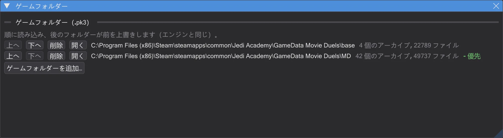
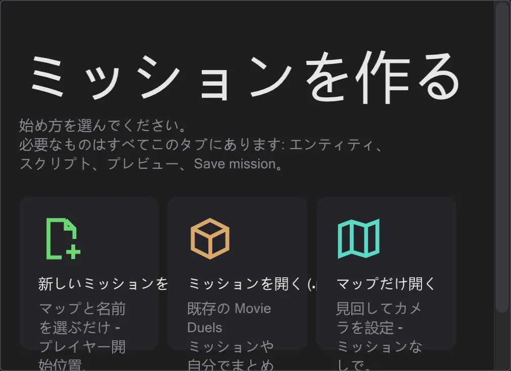

はじめに
最初の一歩
展開して、ゲームの場所を教え、ミッションを開く。準備はそれだけです。
インストール#
- 1
リリースページから最新の
BehavEd-Remake-….zipをダウンロードし、好きなフォルダー(例えばゲームの隣)に展開します。Windows には何もインストールされません。 - 2
behaved.exeを起動します。起動時に GitHub で新しいバージョンを確認して案内します。確認なしにダウンロードすることはありません(切り替えは ヘルプ にあります)。
ゲームフォルダーを指定する#
マップ、モデル、サウンド、ゲームのスクリプトはゲームの .pk3 アーカイブに入っています。編集 → ゲームフォルダー を開き、ゲームフォルダーを追加… でゲームフォルダーを追加します。まず base、次に Movie Duels(MD)などの MOD。ゲームで fs_game が base を上書きするのと同じく、一番下のフォルダーが優先されます。

何かを開く#
入り口はいくつかあります。マップタブのスタート画面(マップが開かれていないとき)には、新しいミッション、.pk3 のミッション、マップだけ、最近のミッションがあります。メニューからは:
- ミッション - ファイル → ミッションを読み込む… で
.pk3を選ぶと、マップ・エンティティ・すべてのスクリプト(タブ)付きでミッションが開きます。ミッション を参照。 - スクリプト - ファイル → 開く でディスク上の
.txtまたはコンパイル済み.ibiを開きます。 - 最近のミッション - ファイル → 最近のミッション でミッション全体をワンクリックで開き直します。

言語#
プログラムは英語・ドイツ語・中国語・日本語に対応しています。起動時は Windows の言語になり、表示 → 言語 で変更できます。コマンド名と値はゲームの表記のまま(affect、SET_NAVGOAL)です。ファイルにはそのまま書かれるからです。
このガイドは ヘルプ → ガイドとチュートリアル から、または BehavEd について の ガイド ボタンから開きます。
behaved.exe の隣の handbuch フォルダーにあり、インターネットなしで使えます。